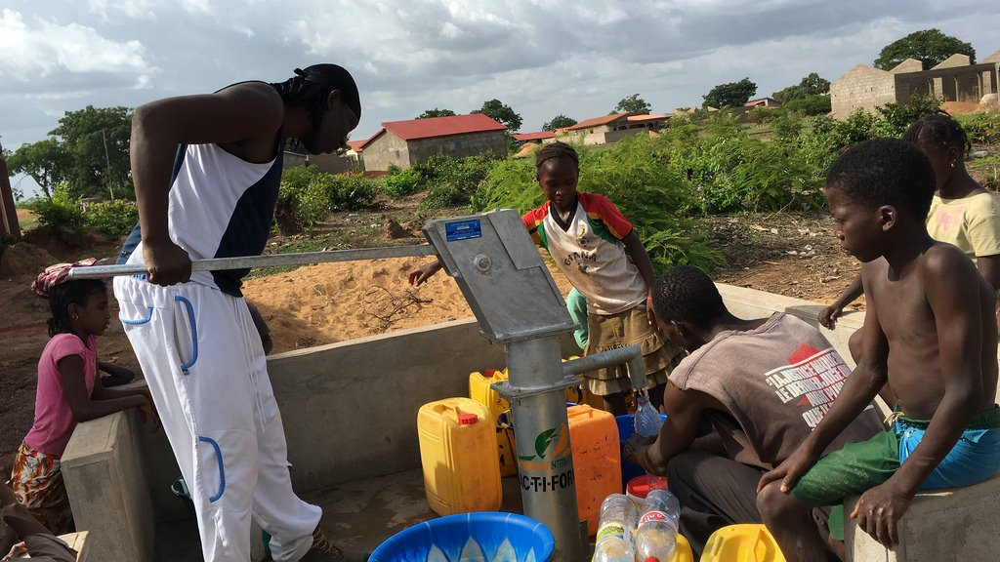
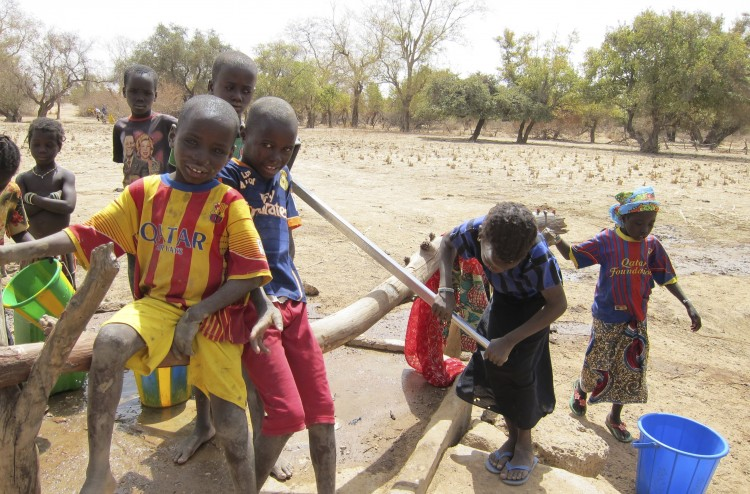
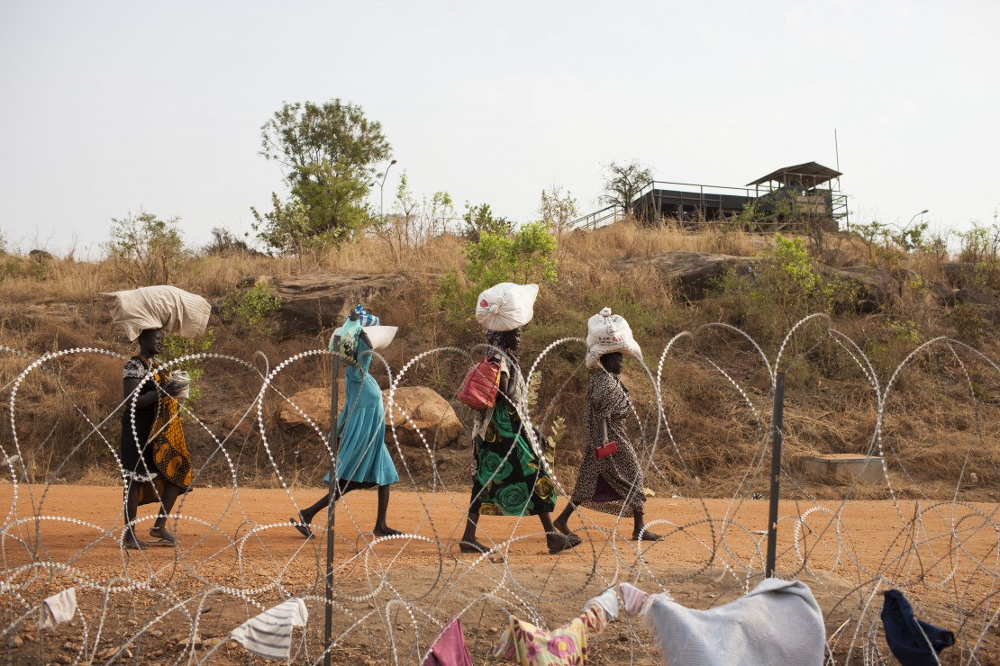

L'idée est née avec N'Faly Kouyaté. Il fut de nouveau confronté aux troubles de l'eau en Guinée. Sa mère lui a parlé des expériences qu'elle a acquises, clarifiant la valeur de l'eau pour les gens là-bas. LINK De même, nous avons besoin d'eau indirectement. Il est dans notre nourriture et nos vêtements. Il est utilisé par l'économie, l'industrie et l'agriculture pour nous donner toutes les choses dont nous avons besoin pour gagner sa vie. Même dans certaines religions, l'eau est nécessaire pour l'ablution rituelle, ce qui doit être fait avant la prière - cinq fois par jour. Ce rite est très important dans l'Islam, qui est la principale religion en Guinée. Et on ne laisse pas son bien en priant pour l'eau. N'Faly Kouyaté a promis d'essayer de faire le meilleur. Et il n'est pas le genre d'homme qui vient de dire des choses, mais les faire! Il a commencé à trouver de l'aide dans le monde. Au début, nous avons été confrontés à l'impossibilité apparente de se permettre le montant d'argent dont nous avons besoin, pour construire des puits pour le village de Manfara. Un puits coûte jusqu'à 8000 euros. Ces modèles sont les meilleurs, que nous aimerions construire dans le village. En attendant, nous cherchons des possibilités moins chères sans perdre la qualité. L'eau est nécessaire partout et toujours. Mentionner maintenant le fait qui s'avère être un problème: l'eau douce est répandue irrégulièrement autour de notre usine.



Les habitants de Manfara attendent encore la réussite de N'Faly Kouyaté pour trouver des personnes et des possibilités de construire des puits dans leur village. Peut-être Vous, oui VOUS, êtes celui que nous recherchons? Le désir le plus profond de nous est de changer le monde à un meilleur endroit.
Non seulement faire du monde un meilleur endroit, mais faire le monde pour nos bien-aimés un meilleur endroit. Nous n'avons aucun impact sur le passé, mais nous pouvons utiliser le présent pour créer un avenir, où nous laissons sanguinement nos bien-aimés.
"Je suis fatigué de tout ce qui se passe dans le monde ces jours-ci. Il y a des gens qui luttent, dans des situations vraiment difficiles (...) Je chante pour le monde entier, pour faire savoir aux gens que nous pouvons arrêter ensemble catastrophe!".
Laissez-nous vous conduire à un voyage dans un pays lointain en Afrique. La Guinée avec son paysage varié est situé en Afrique de l'Ouest. Les fleuves Niger, Gambie et Bafing se posent dans ce pays. Dans les hautes terres se développe la forêt tropicale. Les Grandes Montagnes s'étendent à l'horizon et une vaste Prairie vous donne une impression de la dimension de la Guinée. Maintenant, nous aimerions que vous vous concentriez dans la partie orientale de la Guinée, exactement où le désert est, jusqu'à ce que vous arrivez au village de Manfara.
N'Faly Kouyaté Président, artiste N'Faly Kouyaté, vainqueur du «Talent of Guinea» (Paris, mars 2015, meilleur groupe) et de nouveau nominé aux Prix de la musique guinéenne (novembre 2015), est un artiste multidisciplinaire issu d'un passé profondément traditionnel. Récemment nommé «Ambassadeur du dialogue interculturel» en Belgique, vainqueur du «Guinée Music Award 2012», candidat aux «Octaves de la Musique 2012» en Belgique, nommé «Talent Acoustique» sur TV5 Monde, il a publié son nouveau Album «CHANGE» le 5 août 2015 à Londres.
article
Far far away, behind the word mountains, far from the countries. Far far away, behind the word mountains, far from the countries Vokalia and Consonantia, there live the blind texts.
- Prologue
Partout en Guinée, où le paysage est façonné par des buissons et des forêts sèches, non loin des rives du Niger, se trouve le village Manfara.
[...]
article
Aujourd'hui a été le jour le plus important pour la première étape de notre projet bien FOLOTHESOURCE. Nous avons vu enfin le tir à l'eau! Demain est la grande inauguration.